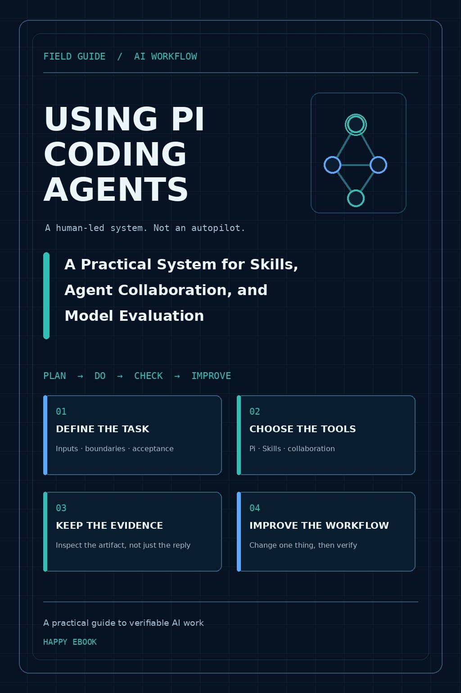

Using Pi Coding Agents
A Practical System for Skills, Agent Collaboration, and Model Evaluation

Using Pi Coding Agents
A Practical System for Skills, Agent Collaboration, and Model Evaluation
AI can produce a convincing answer without completing the underlying work. Using Pi Coding Agents shows how to turn requests into bounded, inspectable workflows—with named outputs, explicit permissions, acceptance criteria, and evidence that the result is real. Starting with Pi fundamentals, the book explains Skills, extensions, safe project setup, and Oh My Pi as a distinct Pi-derived product. It then develops practical approaches to agent roles, collaboration and handoffs, model evaluation, cost-aware model selection, and routing. A complete publishing-workflow case study ties the methods together, from planning and drafting through review and ebook preparation. Across 31 chapters, readers will find: - Step-by-step workflows, reusable prompt examples, checklists, and exercises - A complete offline learner workbook for practice without a model account - Guidance for reviewing tool permissions, protecting credentials, and recovering changes - Evaluation methods that measure errors and human rework—not just answer length or confidence - Clear distinctions between documented behavior, dated examples, and work that still needs verification Written for computer-literate beginners and practitioners who want more reliable AI-assisted work. The book does not promise that a particular model is best, free, or universally available; Pi commands, model IDs, prices, provider policies, and platform rules can change. Check current official documentation before following version-specific instructions.